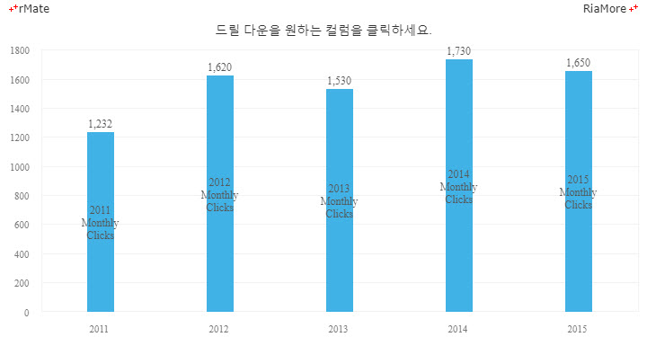
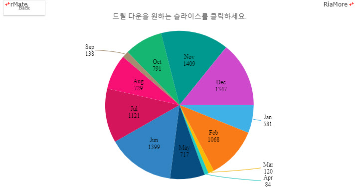

드릴 다운
알메이트 차트는 차트에 표현된 데이터를 더 자세히 분석할 수 있는 드릴 다운 기능을 제공합니다.
예를 들어, 연도별 이익을 표현하는 차트에서 특정한 연도를 클릭하면 클릭된 연도의 월별 이익 현황을 볼 수 있고, 또한 특정 월을 클릭하면 해당 월의 요일별 이익 현황을 볼 수 있는 기능과 같은 것입니다.
드릴 다운 기능은 차트 레벨 노드(예, <Column2DChart> 노드)의 itemClickJsFunction 속성에 드릴 다운 기능을 수행하는 자바스크립트 함수를 지정함으로써 가능합니다.
자바스크립트 함수에서는 드릴 다운시 보여줄 데이터셋을 설정하고 알메이트 차트가 제공하는 API 함수, setDataDrilldown() 를 호출하여야 합니다.
다음은 연도별 이익을 표현하는 컬럼 차트에 드릴 다운 기능을 구현한 예제입니다.
컬럼을 클릭하면 클릭된 컬럼의 월별, 요일별 자료로 드릴 다운이 실행됩니다.
드릴 다운이 실행된 상태에서 이전 데이터로 되돌아가기 위해서는 차트의 좌측 상단에 표시되는 Reset 버튼(초기 상태로 돌아 감) 혹은 Back 버튼(바로 전 상태로 돌아 감)을 클릭합니다.
<Column2DChart showDataTips="true" itemClickJsFunction="itemClick" maxColumnWidth="15" buttonMode="true">
...
function itemClick(seriesId, displayText, index, data, values) {
var data, depth;
depth = document.getElementById("chart1").getDrillDownDepth();
if(depth == 2){
alert("No data has been found.");
return;
}
document.getElementById("chart1").setDataDrilldown(makeData(depth));
}
function makeData (depth) {
var i = 0, n, arr = [], obj,
categoryDatas = [
["Jan", "Feb", "Mar", "Apr", "May", "Jun", "Jul", "Aug", "Sep", "Oct", "Nov", "Dec"],
["Mon", "Tue", "Wed", "Thu", "Fri", "Sat", "Sun"]
];
n = categoryDatas[depth].length;
for(i ; i < n ; i += 1){
obj = {};
obj.Month = categoryDatas[depth][i];
obj.Profit = Math.round(Math.random() * 1500);
arr.push(obj);
}
return arr;
}

See the CodePen 알메이트 차트 - 컬럼 차트에서 드릴 다운 기능
다음은 연도별 이익을 표현하는 파이 차트에 드릴 다운 기능을 구현한 예제입니다.
파이 조각을 클릭하면 클릭된 조각의 월별, 요일별 자료로 드릴 다운이 실행됩니다.
드릴 다운이 실행된 상태에서 이전 데이터로 되돌아가기 위해서는 차트의 좌측 상단에 표시되는 Reset 버튼(초기 상태로 돌아 감) 혹은 Back 버튼(바로 전 상태로 돌아 감)을 클릭합니다.
<Pie2DChart showDataTips="true" itemClickJsFunction="itemClick" buttonMode="true" explodable="false">
...
function itemClick(seriesId, displayText, index, data, values) {
var data, depth;
depth = document.getElementById("chart1").getDrillDownDepth();
if(depth == 2){
alert("No data has been found.");
return;
}
document.getElementById("chart1").setDataDrilldown(makeData(depth));
}
function makeData (depth) {
var i = 0, n, arr = [], obj,
categoryDatas = [
["Jan", "Feb", "Mar", "Apr", "May", "Jun", "Jul", "Aug", "Sep", "Oct", "Nov", "Dec"],
["Mon", "Tue", "Wed", "Thu", "Fri", "Sat", "Sun"]
];
n = categoryDatas[depth].length;
for(i ; i < n ; i += 1){
obj = {};
obj.Month = categoryDatas[depth][i];
obj.Profit = Math.round(Math.random() * 1500);
arr.push(obj);
}
return arr;
}

See the CodePen 알메이트 차트 - 파이 차트에서 드릴 다운 기능